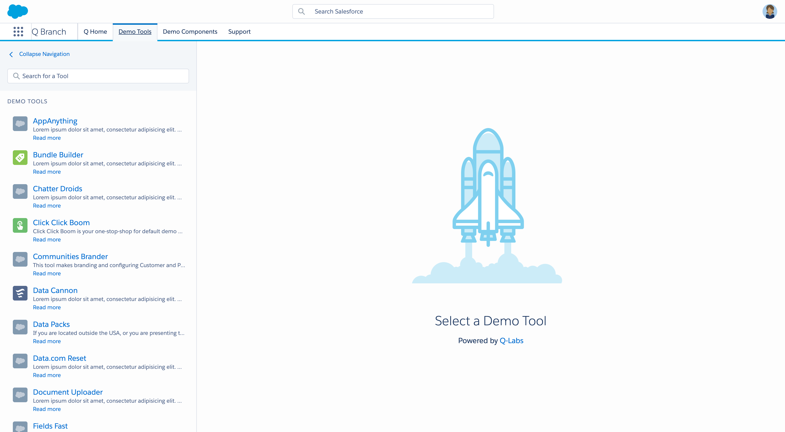

How Might We...
... standardize and scale the creation of productivity solutions and provide demo creators with a centralized experience?
Salesforce provides their sales teams and selling partners with a series of tools that help configuring and customizing product demos in minutes rather than seconds. I led the standardization and scale of said demo tools, both from a UI/UX and a technical perspectives.
As an internal engineering team, we developed an innovative omni-channel strategy so users get a seamless experience across their demo environments. We did it by designing and implementing an ecosystem of micro-services on the Salesforce platform that drastically reduced our time to market and allowed for collaboration with other departments of the company, delivering new demo tools at a faster pace.
 When solution engineers access their Salesforce demo org, they land on a dedicated homepage with all their favorite demo guides and automation tools.... standardize and scale the creation of productivity solutions and provide demo creators with a centralized experience?
Assess the existing product stack:
Influence and align engineering team on new microservices architecture.
Develop custom prototyping platform in NodeJS leveraging Salesforce Lightning Design System components to eliminate redlining and optimize transition from design to code.
Enable demo team on new operational standards.